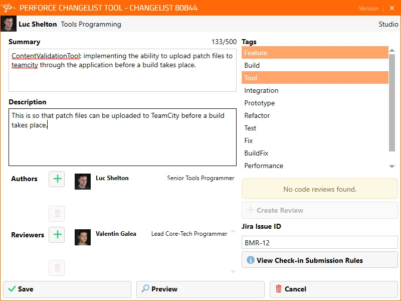
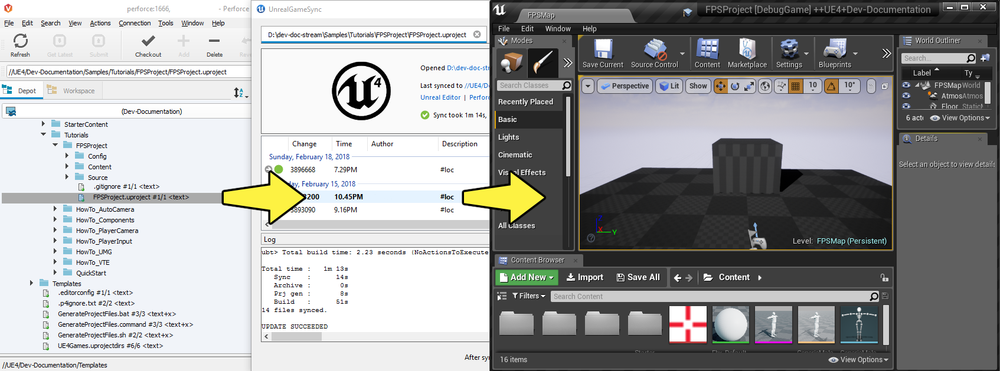
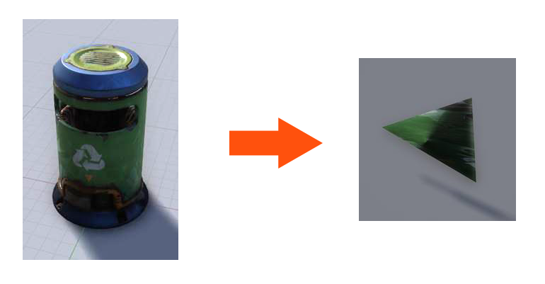

/splash-ue4
|
├───/clean
│
│
├───/main
|
|
├───/project-A
├───/project-B
├───...Growing a Healthy UE4 Ecosystem
How Splash Damage approaches development
@valentin_galea
More than 15 years in the industry, of which 4 at
Splash Damage History
Agenda
Teams and Projects
Standards
Validation
Compilation
Automation & Testing
Projects Structure
Splash Engine & Merges
Disclaimer
Share our learnings
from some AAA projects
mostly from prototypes
years of UE4 work
Find your inspiration!
Teams and Projects


300 employees
Split across multiple ongoing projects
Some projects use Splash Engine
vanilla + own modules and enhancements
Coding Standards
About
Splash values MASTERY especially in C++
We didn’t have an established coding standard
some attempts to document it in wiki’s
Pitfalls
Grow big / Hard to navigate
Get out-of-date quickly
In separate location
outside production source code
Only select few modify or improve them
Nobody has time to read documentation! 😛
Splash Damage approach
Standards are source code files 📑
you can break the build messing with the standard!
Created and improved through code reviews
A system for easy reference and searching
The Coding Standard
2 files
SplashDamageCodingStandard.hSplashDamageCodingStandard.cpp
Located in the main source code
ue4/Game/Source/Main/…
Open Source
Usage
Applied via code reviews

Usage (continued)
Takes the pressure off from feeling judgemental

Modify and Improve
The standard itself is changed though reviews sent to the whole team
If enough up-votes → the proposal gets submitted
Unintended Consequences

Content Standards
Motivation
Poor organisation and practices for assets
… compound over time
… waste productivity
… increase cooking and deployment times
UE4 Editor is easy to modify to
improve workflows
enforce good practices
Asset Naming Rules

Less confusion and improves searching & browsing
Prefixuses initialism rules
Asset Naming Example

Blueprint Standards
Same principles as the Coding Standard
Live in
Game/Content/Standard/


Blueprint Standards (cont.)
We have some basic automatic validators
Best gain for us:
enforcing comment nodes
Content Validation
Automated Validation
CI (Continuous Integration) support
validation after submit
nightly builds
Naming Validation
Blueprints Validation
Assets Validation
Naming Validation
Automated checker / validator
Editor commandlet
Initialism from asset class name
extra JSON file with exceptions
Disallow names like
Test,Prototype,ErrorIntercept new asset creation…
Asset auto-naming on creation

Asset import rule
Disallow import from non-versioned paths
Forbidden example:
adding data from own Desktop folder 💀
Blueprints Validation
Editor commandlet
Basic checks
comment nodes present
public functions / vars must have tooltips
no functions / vars with default names
Future work & ideas
leverage the engine Blueprint Compiler
more complex checks
Assets Validation
For all content - done in CI system
Check for missing or bad references
Disregard/Disallow
Developer,Testfoldershistorically a major pain point for us
Assets Validation (cont.)
How it works
leverage the cooking process
-COOKALL -DUMPALLWARNINGS -WARNINGSASERRORS
Not viable for large projects ⚠️
explore other possibilities
ex: dependency walker via Editor Asset Registry
Compilation
Hardware
Everyday work is very CPU intensive
CPU hardware threads
jump from 8 to 16 substantial (2x)
same from 16 to 32
diminishing returns after
Distributed compilation
Incredibuild for some projects
expensive - needs to be budgeted for
We also tried Fastbuild
free but more difficult to integrate
Build Farm
Different config and layout per project
Best performer machine
AMD Threadripper 1950x (16c/32t)
full Editor rebuild in ~15min
Orchestration
TeamCity - most projects
Jenkins
Infrastructure-As-Code
In the past we used ad-hoc methods that didn’t scale well
Too tight integrated with the CI orchestrator ❌
Too bespoke for a project - cannot reuse ❌
Hard to debug locally ❌
Now leveraging Epic’s own BuildGraph ✅
BuildGraph
Alternative to traditional
BuildCookRunbatch commandsXML based scripts
BuildGraph - Our Usage
Standardized and reusable set of scripts 📑
Unifies all calling paths
Visual Studio
Editor - Hot Reload
command line
CI systems
BuildGraph (cont.)
Powerful out of the box
some good examples in the Engine
We modified it quite a lot
Our most complex use-case:
prepare zipped Editor binaries
Pre-Commit
Context
We follow "trunk-based-development"
Only one main dev branch (per project)
split off only for major releases
Everybody submits collaboratively
less overhead, fast iteration 👍
breakages have large impact 👎
How it works
Effectively 2 systems working together
Frontend
what the devs interact with
Backend
CI / build-machines
Pre-Commit Frontend
Tools that allow indirect submits to main code base
Off-the-shelf
Visual Studio ReSharper Team City plugin
Internally developed
more project specific
written in C# or Python
Example: Visual Studio ReSharper

Pre-Commit Backend
Personal Build system
starts CI build configuration in isolation
more configurations → better coverage 😊️
more configurations → stress on build farm ☹️
Pre-Commit Backend (cont.)
We came up with compile time-saving solution
rebuild all participating configurations nightly
incremental (non-unity) builds throughout the day
Example:
Editor + Game(PC) + Game(PS4)
Overnight: 1.5-2h on fastest machine
Daily: 5-15 min per commit check
Takeaway
Major productivity booster
Pioneered in one project for 1 year
spreading it to others
Not a silver bullet
Automation & Testing
Commit Preparation
Perforce Changelist descriptions
Being verbose is very useful but tiring
We developed tools that assist in:
writing title and description
adding tags like
[Feature][BugFix]etclinks to code reviews or JIRA
Commit Preparation (cont.)

Commit Validation
Perforce Submit validation tool
Changelist formatting
Time of day
to allow time for tests
No commits when build is broken
unless special
[BuildFix]token
Commit Validation (cont.)

Unit Testing
Testing plain classes and structs or single UObjects
We enhanced UE4’s own framework
follow Given / When / Then structure
separate standards file
integrated with CI (ex: TeamCity)
setup & tear-down support
Functional Testing
Blueprint actors in special setup levels to test more complex interactions
Live under
Game/Content/Test/…Named
FTEST_to follow Epic’s convention and for visibilityNot network capable
Look into recent UE4 additions: Gauntlet

Editor Automated Distribution
UnrealGameSync (UGS)

UnrealGameSync
The concept of Last-Known-Good Editor build
Very useful for non-programmers
we stripped out the compilation support
We refactored the packaging script via BuildGraph
more control, adding debug symbols upload
Takeaway
Automation is an worthwhile investment
Must be done early in lifetime of projects
Projects Setup
Game Modules
We strive to have multiple independent modules (as opposed to 1 monolithic one)
Helps with encapsulation and architecture
Allows faster iteration
linkage improvements
Editor Hot-Reload
Promotes re-use throughout projects
Quick & Dirty Automation
GenerateModule.cmdBatch file script that produces
folder structure
initial …build.cs file with good defaults for us
Test Modules
Very useful to access private data from equivalent runtime module
Our solution:
MODULENAME_TEST_APIextension to module API specifierUnrealBuildTool modification
exported as usual
only modules with
bImportTestModuleSymbolscan import
Splash Engine
We extract and re-use the UE work across projects into Splash Engine
game-agnostic engine enhancements & fixes gathered across time
UI components library
Audio utilities
Events, Async Tasks library
Rendering features
Tech-Art utilities (instancing, decal manager, etc)
Overview
Majority of projects get seeded from Splash Engine
Downstream integrations
"Engine" tends to be at latest UE4 version
projects update at their own pace
Upstream integrations
some projects will bubble-up important features
Merge Scenario
Updating a game project to latest UE4 version…
/splash-ue4 |
| |
├───/clean <---------------' copy latest UE version
│ (allows nice incremental diffs)
│
├───/main
|
|
├───/project-A
├───/project-B
├───.../splash-ue4
|
├───/clean -----------------.
│ | merge across to main branch
│ | (also update any plugins we use)
├───/main <----------------'
|
|
├───/project-A
├───/project-B
├───.../splash-ue4
|
├───/clean
│
│
├───/main
|
|
├───/project-A <-----------.
├───/project-B |
├───... | merge from main game repo
| (prepare staging area with latest game advances)/splash-ue4
|
├───/clean
│
│
├───/main ------------------.
| | merge latest engine to game staging
| | (solve conflicts in isolation from game project)
├───/project-A <------------'
├───/project-B
├───.../splash-ue4
|
├───/clean
│
│
├───/main
|
|
├───/project-A >-----------.
├───/project-B |
├───... | merge from staging to game project
| (game project now updated to latest UE)Takeaway
Allows us to have quick integrations
Decouples main game dev work from integration work
Needs dedicated resources otherwise it atrophies
we have small Tech Sharing group
One Last Thing
We did the UE4 4.21 integration following all this
…pre-commit everything
…ran all the CI tests
and then when opening the Editor…

@valentin_galea
Thanks to my Core-Tech team, the BM/LV team and the rest of
Attribution
All images unless noted © Splash Damage
"Megaphone" and "Teams" icons by https://www.flaticon.com/authors/eucalyp under Creative Commons BY 3.0